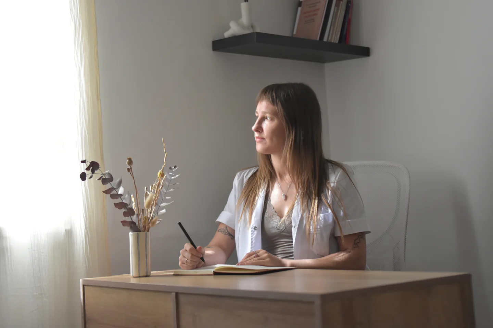
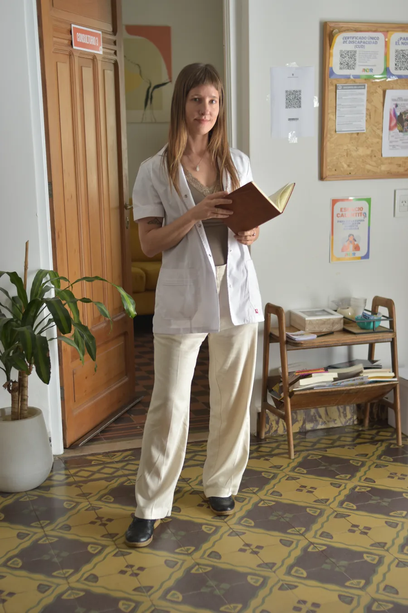
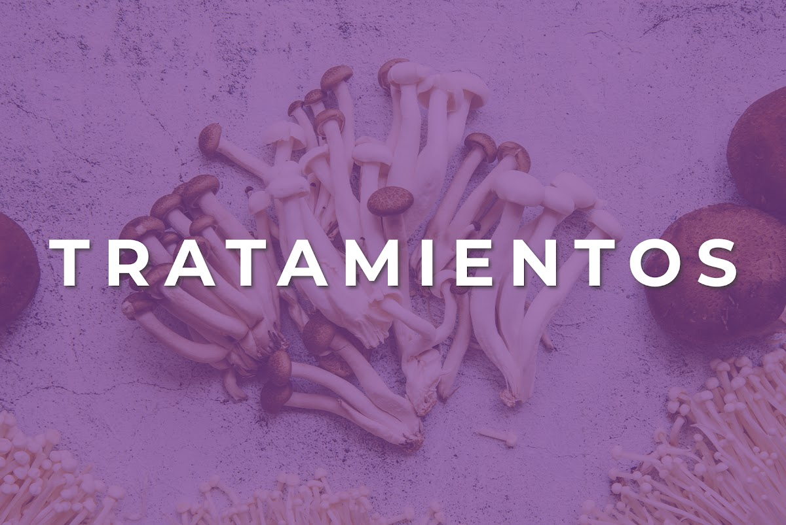

Una presentación personal
Las fotos y la voz de Ivana ocupan el centro. El sitio explica quién es y cómo trabaja antes de pedir una acción.
PROYECTO SELECCIONADO
Una presencia digital para contar una forma de cuidar: cercana, integral y profundamente humana.
Visitar el sitio online DISEÑO & DESARROLLO WEB
DISEÑO & DESARROLLO WEB
Ivana necesitaba un espacio para presentar su enfoque de medicina integrativa y reunir, de forma clara, la información que sus consultantes buscan antes de escribirle.
Diseñé y desarrollé un sitio que combina su historia, tratamientos y vías de contacto. La identidad visual acompaña su práctica con una presencia cálida y profesional.

Las fotos y la voz de Ivana ocupan el centro. El sitio explica quién es y cómo trabaja antes de pedir una acción.
Tratamientos, REPROCANN, trayectoria y turnos tienen recorridos propios para encontrar la información sin perderse.
Desde cualquier sección es fácil llegar a la página de turnos y conocer las modalidades de atención.


EL PROYECTO, EN VIVO